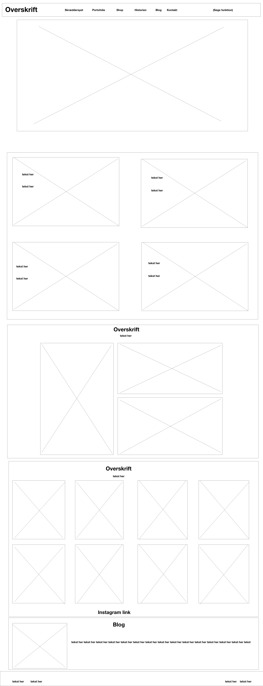

Jasmin Taylor
Katja Søgaard
Agnes Taylor
Mathias Greiff
GruppekontraktDen valgte målgruppe er voksne af den ældre generation fra Nordsjælland og Københavns-området det hører til de højere middelklasser. Det er folk som går op i design møbler, samt den nuværende trend inden for skræddersyede møbler, hvor målgruppen viser stærk interesse inden for unikt design som er lavet i god kvalitet.
Font, farver m.m. Lighthouse audit (minimum 3 billedoptimeringer)
Ud fra vores 5 sek test kan vi konkludere at vores testpersoner opfattede hjemmesiden ret forskelligt. Der er et køkken billede, som fylder det meste af startsiden og derfor troede de fleste at det havde noget med et køkkenforhandler at gøre. De fleste synes det var uklart at vide hvad sitet handlede om, da det gav et blandet budskab med billedet af køkkenet. Derudover mente vores testpersoner at det mest i øjenfaldende på billedet var billedet, som fylder det meste på hjemmesiden samt logoet i venstre hjørne.
Ud fra vores resultat af BERT testen kan vi konkluderer at sitet allerede opfylder meget af det vi og vores kunde gerne vil ramme. Sitet fungerer rigtig godt hvilket betyder at vi kun laver få ændringer for at rykke den til der hvor vi i samarbejde gerne vil have at sitet skal være.
Hjemmesiden skulle gerne være enkelt, kvalitet og naturligt med en følge af de nyeste trends. Derudover er det en lille smule uklart ved første øjekast om der sælges køkkener eller andet inventar. Der har vi til opgave at gøre det tydeligt for forbrugeren at her er tale om en møbelsnedker, som laver unikke produkter specielt til forbrugeren.
Unikt håndværk i god kvalitet, lavet med kærlighed.
Snedker laver et sengebord og man følger processerne fra start til slut. Imens fortæller han om sin kærlighed til faget og hvilke behov hans kunder har.
Filmen optages i et location - ved snedkerens værksted. Man starter med at se en port blive lukket op og ser snedkeren komme ind. Derefter går han gennem værkstedet og begynder at se lidt nære klip, hvor han skitserer. Så begynder man at interviewe ham, mens man ser han arbejder med noget værktøj (evt. høvl eller slibemaskine) og et klip hvor han ser koncentreret ud mens han arbejder. Han begynder at arbejde med fransk flet sengebord, som er en af hans nuværende projekt.
Styletile
Wireframe
Lauýoutdiagram
Liste over content, som i vil bruge på sitet.
beskrivelse af processen af jeres postproduktion. Hvad har I gjort ved billederne. Eksemplificer jeres originalbilleder med mindst 3 stk og forklar, hvordan og hvorfor de er efterbehandlet. Indsæt et masonry gallery med alle 60 originalbilleder i bunden af siden. Se kode her (tag nr 7)
udvælg og forklar minimum ét interessant HTML-eksempel med tilhørende CSS
I refleksions-afsnittet vil vi gerne have, at I beskriver jeres redesign løsning med de fagudtryk, I har lært indenfor uddannelsens områder. Her kan I med fordel anvende de samme kriterier, som I brugte til at analysere den eksisterende løsning. Vi vil også gerne have en beskrivelse af jeres proces og de eventuelle vanskeligheder, I er stødt på undervejs.
Skærmdump af Git versions historik